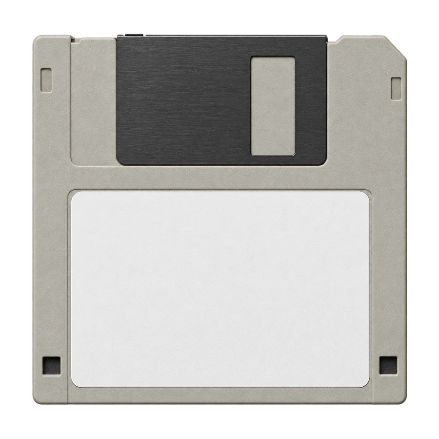
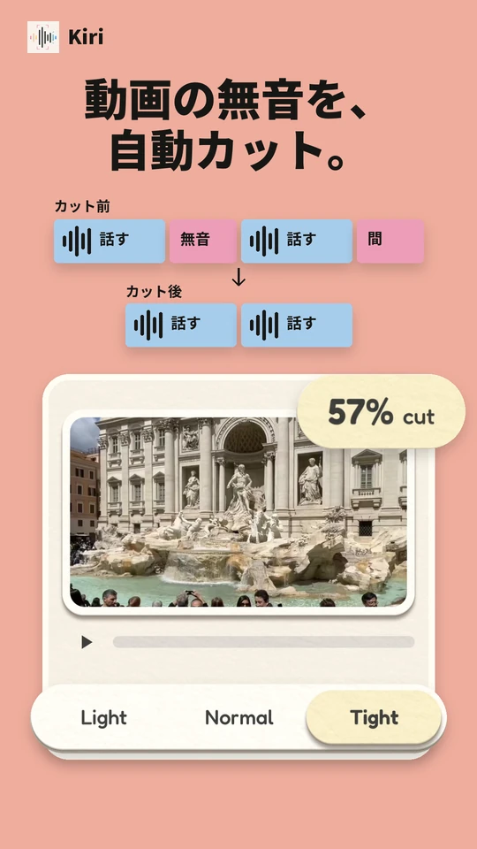
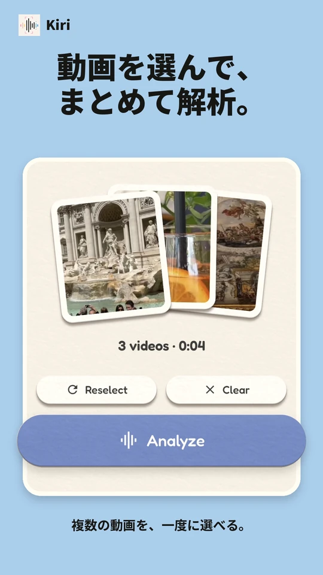
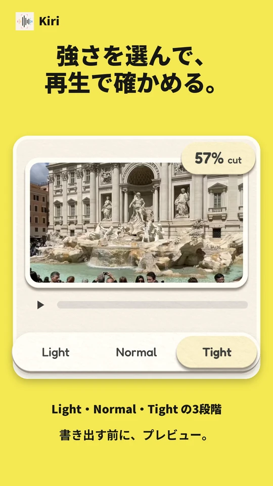
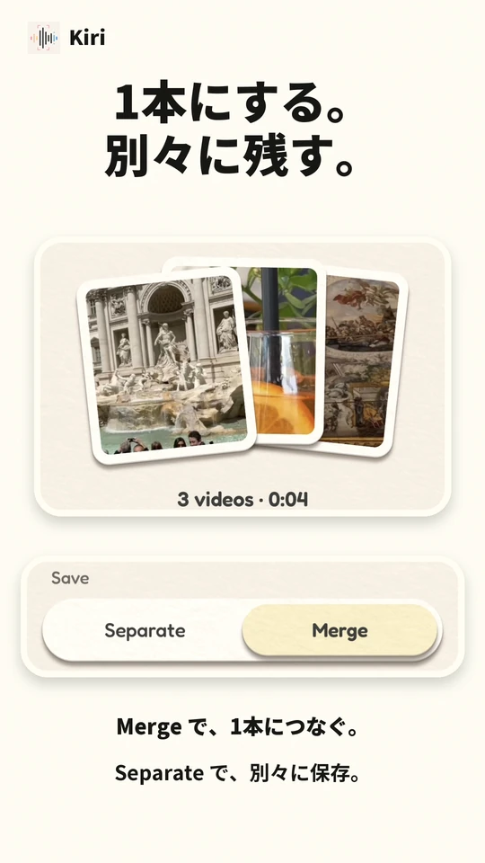
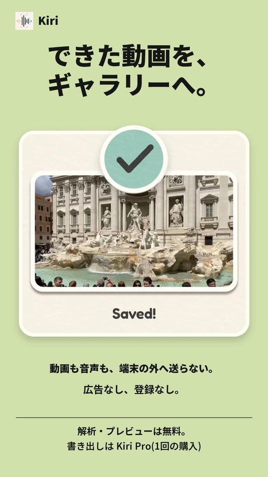

カットの強さは3段階
Light・Normal・Tightを切り替え、プレビューで確かめてから選べます。
ANDROID VIDEO EDITOR
話している動画から、話していない部分を自動でカット。vlogやSNSに投稿する前の、間を詰める作業を手早く。
Google Playで公開中解析・プレビュー無料 ／ アプリ内購入あり

WHO IT'S FOR
話していない部分を自動で見つけてカット。カットの強さを選び、プレビューで仕上がりを確認してから保存できます。複数の動画をまとめて扱うこともできます。
Light・Normal・Tightを切り替え、プレビューで確かめてから選べます。
使いたい動画を複数選んで、一度に解析できます。
Mergeで1本につなぐか、Separateで動画ごとに書き出すかを選べます。
解析もカットも端末内で行い、動画や音声を外部サーバーへ送りません。
A QUICK LOOK
横にスクロールして操作の流れを見られます。画像を押すと大きく表示できます。





HOW IT WORKS
端末内の動画を選択します。
話していない部分を自動で見つけます。
カットの強さと、結合・個別保存を選びます。
カットした動画が端末のギャラリーに保存されます。
PRICING & PRIVACY
解析・プレビューは無料。書き出しはKiri Pro（買い切り）。
動画の選択、解析、カット強度の調整、プレビューは無料で利用できます。動画の書き出しには、アプリ内購入「Kiri Pro」が必要です。1回の購入で利用でき、月額料金はかかりません。価格はアプリ内の購入画面でご確認ください。
動画・音声の解析、プレビュー、書き出しは端末内で行い、動画や音声を外部サーバーへ送信しません。広告表示やKiriのアカウント登録はありません。購入処理にはGoogle Playを使用します。